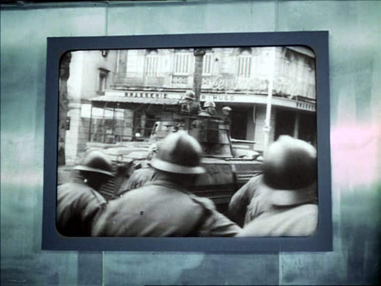
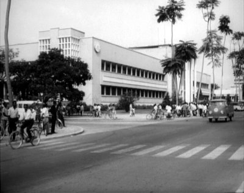
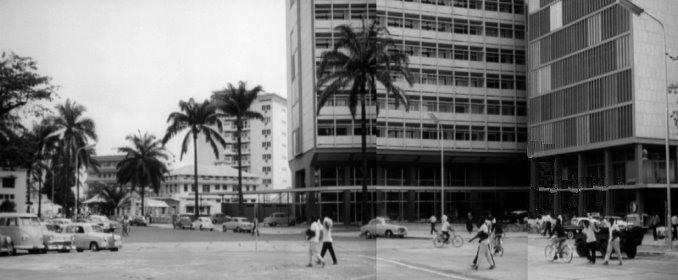
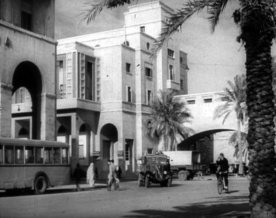
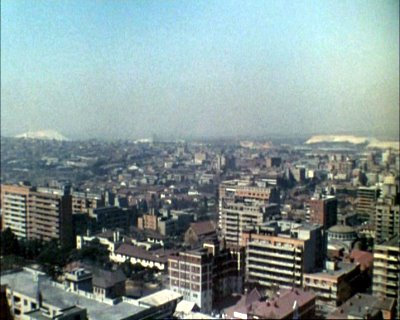
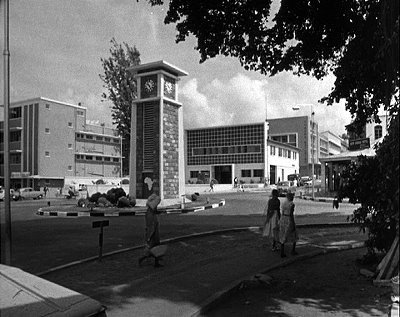

AFRICA
ALGIERIA
Algiers
Calle Didouche Mourad (former Rue Michelet)
THE CHAMPIONS: Desert Journey (Paul Dickson: Spring 1968)
In his office Tremayne showes Craig and Richard newsreel footage (from the British Pathe newsreel, 'Algeria Crisis!' 1960 ) of riots in the streets of El Ham.
(Identified be Michal Richardson, October 2022)
DEMOCRATIC REPUBLIC OF THE CONGO
Kinshasa
Boulevard du 30 Juin
DANGER MAN: Loyalty Always Pays (Peter Yates: 1965)
Various stock shots from Africa (Hôtel des Postes, Hôtel de la Poste, 1009 Bd Du 30 Juin).
(Identified by Pierre Alfonsi, April 2023)
Place Braconnier

DANGER MAN: Loyalty Always Pays (Peter Yates: 1965)
Various stock shots from Africa (crossing avenue Isiro et avenue de la paix).
(Identified by Pierre Alfonsi, April 2023)
KENYA
Lake Nakuru
DANGER MAN: Loyalty Always Pays (Peter Yates: 1965)Stock shot of Africa (Fischer’s Tower).
(Identified by Pierre Alfonsi, June 2024)

LIBYA
Tripoli
DANGER MAN: To Our Best Friend (Patrick McGoohan: 1965)Stock shots establishing Bagdad and the Vincent’s apartment building (corner of Martyrs' Square and Omar Almukhtar Road).

DANGER MAN: I Can Only Offer You Sherry (George Pollock: 1965)Establishing shots of Baghdad (Ahmed Pasha Karamanli Mosque, Omar Almukhtar Road)
(Identified by Paul Stroud, November 2014)

SOUTH AFRICA
Johannesburg

DEPARTMENT S: The Trojan Tanker (Ray Austin: June1968)
Johannesburg July 22nd - a plane takes of from Johannesburg to Paris carrying $2,000000 in gold.
TANZANIA
Zanzibar
Palace of Wonders, Stone Town, Zanzibar

DANGER MAN: The Mercenaries (Don Chaffey: 1964)
Stock shot to represent the African ‘Confederation’ and its neighbour.
(Identified by Geoff Dodd, January 2022)
Arusha

DANGER MAN: The Mercenaries (Don Chaffey: 1964)
After visiting the hospital John Drake makes an early morning call on the Prime Minster.
(Identified by Jo-Anne Stuart, January 2007)
Return to Index